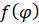
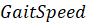
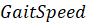

УДК 004.42
Управление движением четвероногого шагающего робота
О.И. Лихогуб
Кубанский государственный университет
ул. Ставропольская 149, 350040 Краснодар, Россия
Ключевые слова: робототехника, шагающий робот, подходка, управление движением, траектория конечностей робота.
Аннотация
В рамках данный работы рассмотрена модель управления движением шагающего робота с основой из элементарных периодических функций. Построены основные уравнения траекторий конечностей робота и описаны некоторые их характеристики.
Шагающие роботы завоевывают всё большую популярность в области перемещения по пересеченной местности, где других типов не могут проехать, например, колесные или гусеничные. В построении шагающих роботов часто применяется дизайн, вдохновленный природой, такой подход позволил начать с заведомо работоспособной конструкции и приступить к решению задач по управлению движением роботов.
Для перемещения в пространстве шагающие роботы осуществляют скоординированное движение своими конечностями, где совокупность траекторий и скоростей конечностей робота называется походкой (gait), которая представляет собой повторяющую последовательность действий. Каждое повторение этой последовательности называется одним циклом походки (gait cycle), а время, которое занимает один цикл, называется периодом походки (gait period).
Рисунок 1 Вид сбоку на траекторию ноги робота
В нормальном состоянии каждая конечность за один цикл походки совершает ровно один цикл шага. Фазу походки принято обозначать , которая пробегает значения от 0 до 1, где нулем выбирается некоторая отсчетная точка в цикле ходьбы, например, момент начала подъема задней левой конечности робота. Фаза шага каждой конечности, в частности, может быть описан к значение смещения относительно фазы походки. В течение одного цикла походки каждая нога робота преодолевает полный цикл шага, который разбит на две главных стадии: стадия поддержки (stance), задаваемая траекторией и стадия переноса (swing), задаваемая траекторией . Рассмотрим простейший случай для траекторий, основанных на тригонометрических функциях синуса и косинуса:
где  – длина шага по оси , – длина шага по оси , – высота в наивысшей
точке при переносе ноги.
– длина шага по оси , – длина шага по оси , – высота в наивысшей
точке при переносе ноги.
Скорость движения робота в случае использования траектории можно рассчитать на основании параметров длины шага:
где  – длина шага по оси , – длина шага по оси , –длина шага, – период походки,  – скорость походки.
– длина шага по оси , – длина шага по оси , –длина шага, – период походки,  – скорость походки.
Хотя исходя из формулы 5 видно, что для увеличения скорости движения робота необходимо увеличивать длину шага или уменьшать период походки, следует учесть тот факт, что рассмотренная модель управления роботом не учитывает параметры конструкции, массогабаритные характеристики, параметры окружающей среды. Несмотря на знание того, что функции для траекторий являются периодическими, их аналитический вывод крайне сложен, а перебор вариантов сопряжен со значительными вычислительными затратами.
Дальнейшим развитием технологий генерации походки является применение эвристических алгоритмов для динамической генерации походки на основании текущих параметров окружающей среды таким образом, чтобы робот в процессе своей работы мог изменять параметры ходьбы, адаптируясь ко внешним и внутренним факторам.
Библиографический список
1. Yamamoto, H., Kim, S., Ishii, Y. Generalization of movements in quadruped robot locomotion by learning specialized motion data // Robomech. 2020.
2. Raibert, M., K. Blankespoor, G. Nelson, R. Playter Bigdog, the rough-terrain quadruped robot // IFAC Proceedings Volumes. 2008.